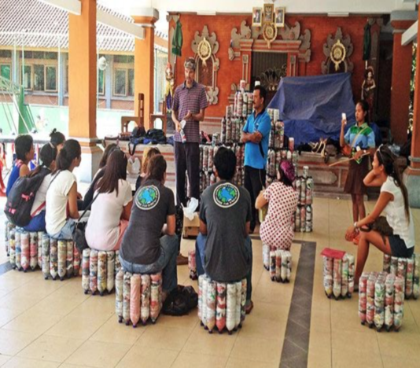
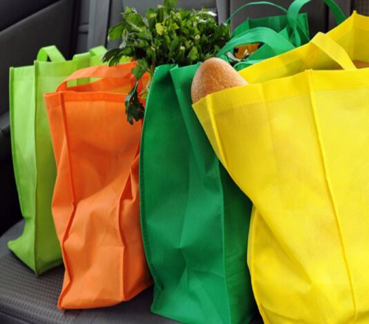
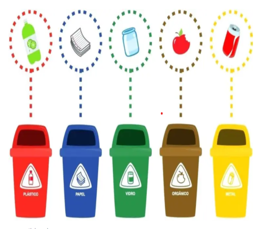

Artikel

Daur Ulang
Bagaimana Cara Mendaur Ulang Sampah di Rumah?
31 Maret, 2022
by zerowaste_Indonesia

Edukasi
Kenali 5 Jenis Sampah di Sekitar Kita
01 April, 2022
by Kania Dekoruma

Shoping
Tips Belanja Ramah Lingkungan
01 April, 2022
by LifeStyle